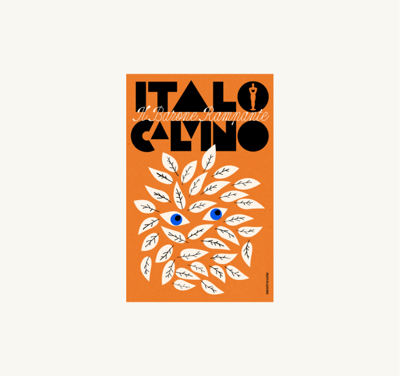
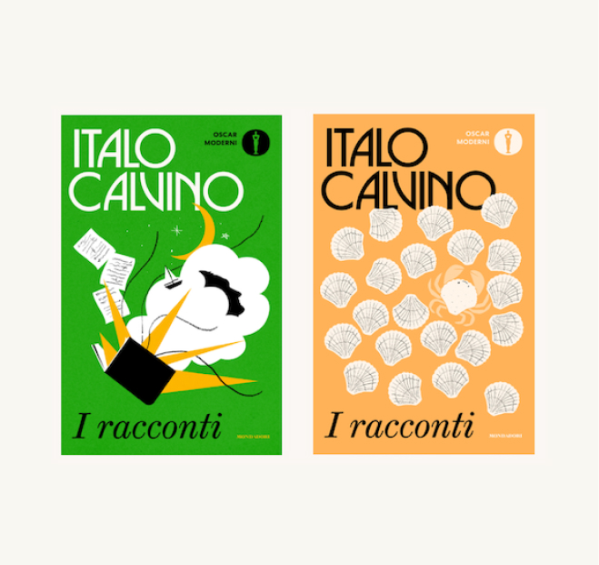
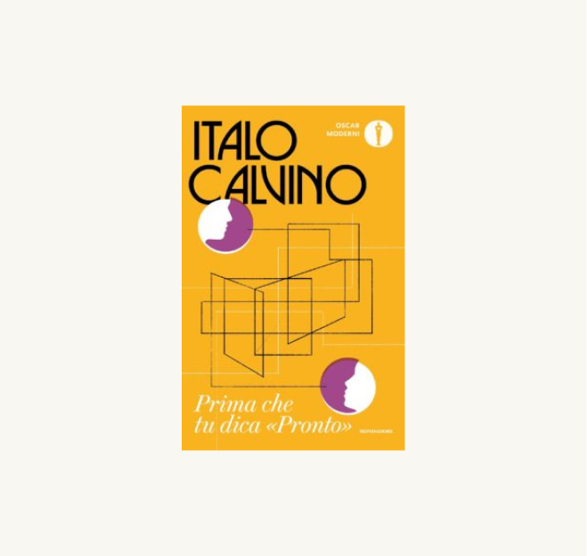
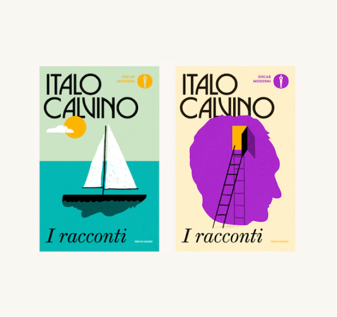

Mondadori un anno e mezzo fa ha chiesto a quattro designer di copertine stranieri di fare una proposta grafica per la uniform edition per la nuova edizione di tutti i libri del grande scrittore italiano Italo Calvino, in vista del centesimo anniversario della sua nascita. A vincere la gara è stato l’irlandese Jack Smyth, un grafico che negli ultimi anni è stato molto apprezzato nell’editoria internazionale.
Come sono stati ridisegnati i libri di Italo Calvino
Per il centenario della sua nascita Mondadori ha commissionato delle nuove copertine al grafico irlandese Jack Smyth

Il progetto grafico complessivo vuole trasmettere l’idea che Calvino sia un autore «giocoso, ma anche serio, i suoi libri non sono comici, ma contengono un modo diverso di guardare alle cose, sempre profondo ed esistenziale, ma in una maniera accessibile e gioiosa». Le illustrazioni contengono riferimenti al contenuto dei libri, ma senza volerli rappresentare interamente, perché per Smyth la cosa più importante era trasmettere la voce di Calvino, più che spiegare i suoi libri.

Sebbene le copertine richieste per la gara fossero tre, Smyth ne ha presentate sette, perché voleva essere sicuro che lo stile generale del progetto andasse bene per tutti i libri di Calvino, che sono molto vari tra loro per temi e generi. Per farle ha avuto quasi due mesi che per le tempistiche abituali del suo lavoro sono tanto tempo («di solito due settimane»).

Il suo progetto è stato appunto quello che Flegenheimer e i suoi colleghi hanno scelto e successivamente Smyth lo ha modificato per venire incontro alle richieste di Mondadori, che ad esempio non era convinta dei font, cioè dello stile di caratteri, ipotizzati inizialmente.
